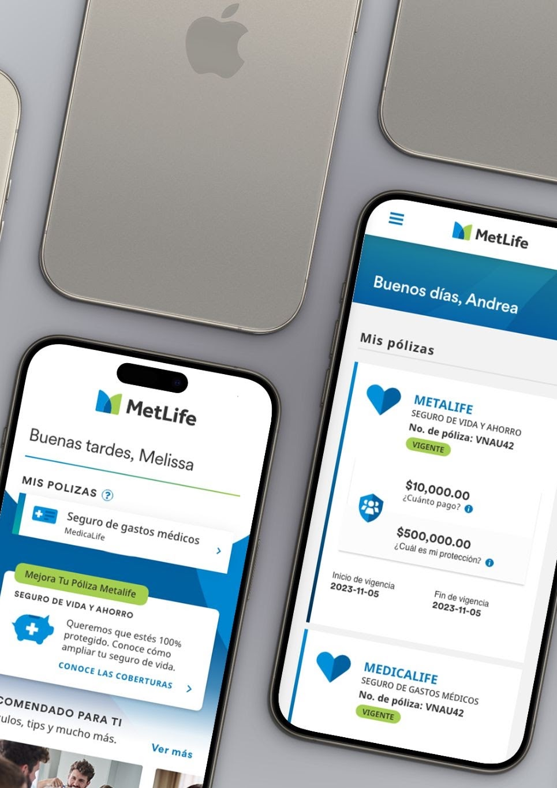

01
Simplifying insurance data
Progressive Disclosure
Problem. Users struggled to understand their coverage, payments and benefits.
Solution. Modular sections, contextual help and visual hierarchy simplified comprehension.
Client Self-Sevice App & International Web Portals
MetLife is a global leader in insurance and financial services, needed to modernize its digital ecosystem across multiple regions. I led the design of the Client Self-Service mobile app (CSS) & Client Web Portal (CWP) for Mexico, the Agent Web Portal (AWP) for the United States & Colombia.
My role as the UX/CX Lead was to simplify complex insurance workflows, unify experiences across platforms and establish scalable design systems that could adapt to different markets and regulatory environments.

01 — the challenge
The goal was to make insurance clear, approachable and consistent across platforms and regions..
02 — my role
I owned and supported design across CSS, CWP and AWP
03 — approach
Each principle below is the one that decided how its problem got solved.
01
Progressive Disclosure
Problem. Users struggled to understand their coverage, payments and benefits.
Solution. Modular sections, contextual help and visual hierarchy simplified comprehension.
02
Scalable systems
Problem. Different markets required unique flows but needed a unified brand experience.
Solution. Built interconnected design systems with reusable components and shared interaction patterns.
03
Empathy through clarity
Problem. Financial and medical processes caused anxiety and uncertainty.
Solution. Step by step flows, upfront explanations, clean confirmations and instructional content reduced ambiguity.
04 — impact
Specific metrics and results are confidential.
05 — reflection
Working across multiple international portals reinforced how much clarity, consistency and empathy matter in complex, regulated industries. This project sharpened my ability to